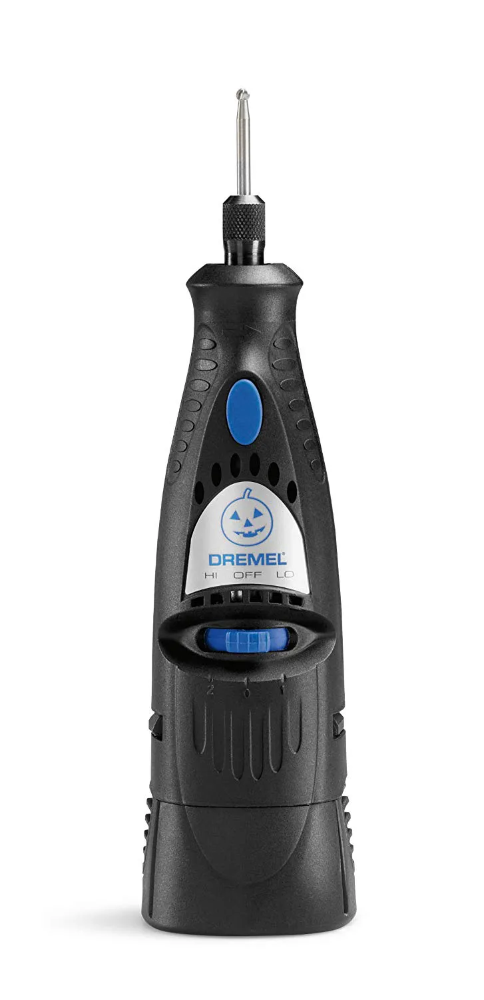
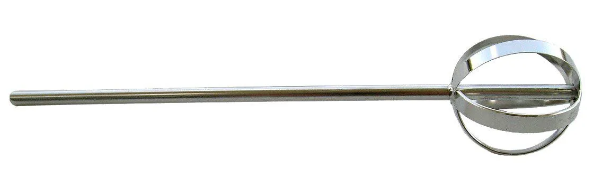
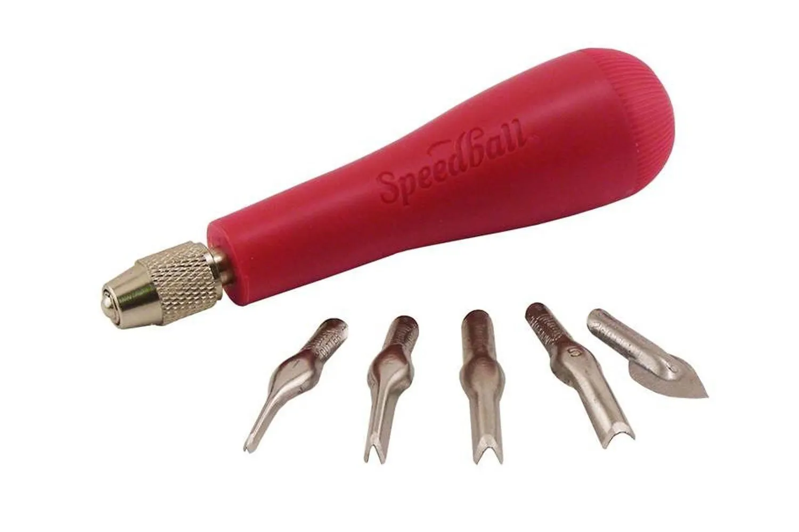
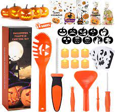

It takes more than a large kitchen knife and a goop scoop to create the
jack-o’-lantern of your dreams—or nightmares. Here are some innovative tools and technology that
will make your glowing gourd the envy of your neighbors this Halloween. Once you’ve got everything
you need, get carving.
.
1. Dremel Pumpkin Carving Kit

2. Pumpkin Gutter Drill Attachment

|
3.Pumpkin Masters Power Saw
:format(webp):no_upscale()/cdn.vox-cdn.com/uploads/chorus_asset/file/19523261/51urnc9z89l._sl1074_.jpg)
4.Speedball Linoleum Cutter 

3.Pumpkin Masters Power Saw
4.Speedball Linoleum Cutter
need some pumpkin carving ideas?
check out this pinterest
board!
5. need kid friendly tools? here are Pumpkin Carving Kit for Kids, 6
Easy Halloween Pumpkin Carving Tools!
INCLUDES; 6 LED Candles, 10 Carving Stencils & 20 Halloween Cellophane Candy Bags. can be
purchased on
amazon.
|
|---|